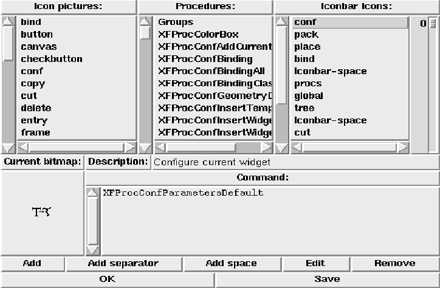
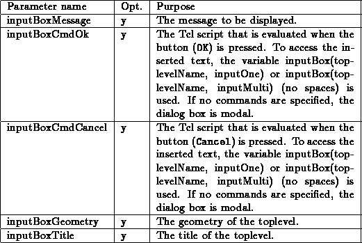
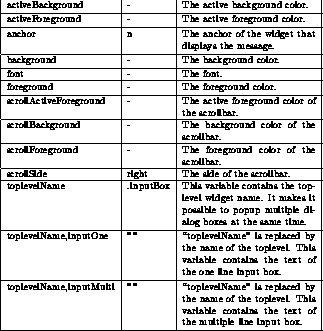

This template defines a new procedure named KeysymBox. Calling this procedure pops up a dialog box to select a keysym. The keysym can be selected from a list, or keypress keysyms can be entered via an example area. The procedure gets the following parameters:

To configure the different aspects of the keysym box, there exists a global array named keysymBox. A default value of ``-'' means that the Tk default value is used. This array contains elements that control the keysym box (color, font etc.):

A small example of an invocation may look like this:
KeysymBox ''/usr/local/lib/Keysyms''
This would create the following dialog box:

Figure: The template KeysymBox